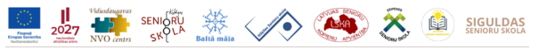
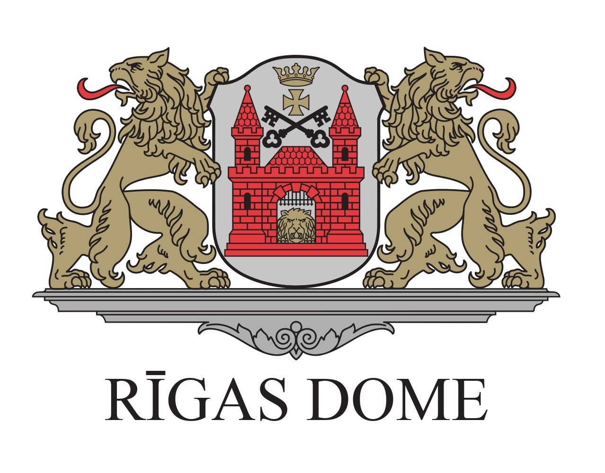
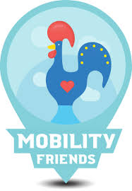

LKA Trešās paaudzes universitātes nodarbība ar Rūtu Muktupāvelu
Saruna par kultūras jēdziena mainīgumu gadsimtu gaitā
Trešās paaudzes universitātes nodarbība, 2025. gada 22. oktobris
Aicinām jūs reģistrēties Latvijas Kultūras akadēmijas Trešās paaudzes
universitātes
gaidāmajai nodarbībai, kas notiks 22. oktobrī plkst. 14:00 LKA Gara mājā (2. stāvā), Miera
ielā
58a, Rīgā.
Par nodarbību
Otrajā Trešās paaudzes universitātes nodarbībā profesore Rūta Muktupāvela — Latvijas Kultūras
akadēmijas
pasniedzēja un kultūras ministres padomniece kultūrpolitikas jautājumos — aicina uz sarunu par to,
kā gadsimtu gaitā mainījusies kultūras jēdziena izpratne un kādas kultūras izpratnes sastopam šodien.
Par Rūtu Muktupāvelu
Rūta Muktupāvela ir pētniece ar doktora grādu kultūras teorijā un aktīva radošās jomas pārstāve.
Viņa ir soliste tradicionālajā mūzikā balstītos projektos un koncertos, tostarp
“Iļģi. Rainis. Spēlēju, dancoju”, “Kaza kāpa debesīs” un “Ne uz vienu dienu”.
Kopš 1991. gada kopā ar grupu “Iļģi” un Valdi Muktupāvelu viņa uzstājusies Latvijā, Lietuvā,
Igaunijā,
ASV, Norvēģijā, Zviedrijā, Somijā, Beļģijā, Japānā un citur.
Vecmāmiņas.lv projekts saņem Eiropas Inovatīvas mācīšanas balvu
“Angļu valodas mācīšana senioriem” izcelts ar Eiropas atzinības zīmi
Eiropas Komisijas Inovatīvas mācīšanas balva 2025
Šodien, 15. septembrī, Eiropas Komisija paziņoja šī gada Eiropas Inovatīvas mācīšanas balvas (European
Innovative
Teaching Award – EITA) laureātus.
Kopumā šogad balvu iegūst 117 Erasmus+ projekti no visas Eiropas piecās kategorijās: agrīnā pirmsskolas
izglītība un
aprūpe, vispārējā vidējā izglītība,
profesionālā vidējā izglītība, pieaugušo izglītība un Eiropas Atzinības zīme valodu apguvē.
Trīs Latvijas projekti starp laureātiem
Rīgas Ziepniekkalna vidusskolas projekts “Atbilstošu caurviju prasmju izmantošana mācību procesā –
pamats
stabilitātei un demokrātijai” (vispārējā vidējā izglītība)
Biedrības “Baltic Human Rights Society” projekts “Iekļaujoša cilvēktiesību izglītība – ceļš uz
sabiedrības
līdzdalību un vienotām Eiropas pilsoņu vērtībām” (pieaugušo izglītība)
Biedrības “Vecmāmiņas.lv” projekts “Angļu valodas mācīšana senioriem” (Eiropas
Atzinības zīme valodu apguvē)
“Lepojamies, ka Latvijas izglītības iestāžu un organizāciju īstenotie Erasmus+ projekti gūst augstu
novērtējumu
Eiropas līmenī, apliecinot to kvalitāti, pievienoto vērtību un ilgtermiņa ietekmi.
Šī balva īpaši izceļ pilsoniskās izglītības nozīmi, kas stiprina sabiedrības spēju būt aktīvai un
demokrātiskai,
kā arī piederības sajūtu Eiropas kopīgajām vērtībām.”
Balvas tēma 2025. gadā
Šī gada balvas tēma – “Pilsoniskā izglītība: līdzdalība demokrātiskā dzīvē, kopīgas vērtības un pilsoniskā
iesaiste” – akcentē izglītības nozīmi sabiedrības saliedētībā un demokrātijas stiprināšanā.
Tā ir īpaši nozīmīga laikā, kad pieaug dezinformācijas un pilsoniskās līdzdalības izaicinājumi, un uzsver
iedzīvotāju iespējas kļūt par aktīviem pilsoņiem, kuri izprot Eiropas vērtības un iesaistās sabiedriskajā
dzīvē.
Par Eiropas Inovatīvas mācīšanas balvu
Eiropas Inovatīvas mācīšanas balva ir Eiropas Komisijas iniciatīva, kas, sākot ar 2021. gadu, katru gadu tiek
organizēta Erasmus+ programmas dalībvalstīs, lai izceltu inovatīvas mācīšanas pieejas un skolotāju
sasniegumus.
Līdz šim šo balvu ieguvuši jau vairāk nekā 500 projekti visā Eiropā.
Latvijas Kultūras akadēmija veido kultūras mūžizglītības piedāvājumu senioriem
— Latvijas Kultūras akadēmija kopā ar biedrību
Vecmāmiņas.lv
Atklāšanas pasākums notiks LKA Gara mājā (Miera iela 58a, Rīga).
Starptautiskajā Senioru dienā - 2025.gada 1.oktobrī LKA Gara mājā sadarbībā ar biedrību
“Vecmāmiņas.lv” tiks atklāta
Trešās paaudzes universitāte kultūras studijās.
Trešās paaudzes universitātes jeb The University third Age (U3A) ir pieaugušo neformālās izglītības
iniciatīva, populāra
un atzīta daudzās pasaules valstīs, kura piedāvā izglītošanos un socializēšanos ikvienam interesentam, kas
uzskata sevi
par senioru jeb trešās paaudzes pārstāvi. Pirmā U3A sāka darbu 1973.gadā Francijā Tulūzas universitātes
Sociālo zinātņu
fakultātē, un turpmākajos gados šī kustība attīstījās gandrīz visās Eiropas valstīs, tai skaitā Latvijā.
Biedrība “Vecmāmiņas.lv
”, kuras mērķis ir apvienot aktīvos seniorus un aktualizēt mūžizglītības iespējas senioru vecumā,
mudina seniorus kļūt par aktīviem pilsoņiem un iesaistīties mūžizglītības aktivitātēs. Kā viena no
mūžizglītības
prioritātēm tiek noteikta kultūrpratība un medijpratība, kas palīdz aktīvi iesaistīties mūsdienu
sabiedriskās norisēs.
Sadarbībā ar Latvijas Kultūras akadēmiju ir izveidots Trešās paaudzes kultūras studiju universitātes
mācību
kurss “Kultūras izpratne, analīze un radošā pašizpausme”. Kursa mērķis ir paplašināt senioru
zināšanas par Latvijas un
pasaules kultūras procesiem, attīstīt prasmi analizēt mākslas darbus un kultūras norises, kā arī rosināt
radošu
pašizpausmi, kritisko domāšanu un spēju dalīties pieredzē ar citiem. Kursa pasniedzēji ir Latvijas Kultūras
akadēmijas
profesori un lektori.
Kursa mērķauditorija ir aktīvi un zinātkāri seniori, kuri vēlas paplašināt savas zināšanas kultūras un
mākslas jomā,
apgūt jaunas prasmes (piem., digitālo satura radīšanu), attīstīt kritisko domāšanu un komunikācijas iemaņas,
dalīties
savā pieredzē un bagātināt kopienas kultūras dzīvi.
Nodarbību norise plānota LKA Gara mājā Miera ielā 58a, Rīgā. Gara māja tiek veidota kā vieta, lai dalītos
domās, radītu
un papildinātu dažādu paaudžu kultūras pieredzi.
Atklāšanas pasākumā 2025.gada 1.oktobrī pl.10:00 varēs uzzināt par plānoto mācību norisi, kā arī piedalīties
pirmajā
radošajā diskusijā ar LKA Kultūras un mākslas studiju programmas vadītāju, docenti Zani Grigoroviču par
mūsdienu mākslas
izpratnes jautājumiem. Trešās paaudzes kultūras studiju universitātes dalībniekus sveiks LKA rektors Dāvis
Sīmanis.
Atklāšanas pasākumā aicināts piedalīties ikviens interesents, iepriekš aizpildot dalības pieteikumu
https://forms.gle/D8UNnH8m5bTiKTfM9 līdz 2025.gada 26.septembrim.
Ir noslēgts LĪGUMS par sadarbību un informācijas apmaiņu starp biedrībām “Vidusdaugavas NVO centrs” un
biedrību “Vecmāmiņas.lv”. Mērķis: aktīva iesaistīšanās tīklošanās pasākumos visā Latvijā un citās
aktivitātēs,
ko paredz apjomīgais un nozīmīgais projekts - “Trešās paaudzes universitāšu tīkla izveide Latvijā
sabiedrības
vecākās paaudzes sociālās labklājības un drošības vairošanas interesēs”. Līdzfinansējums un atbalsts: ES
Atveseļošanas fonds un valsts budžets.

Kopā ar vadošo partneri “Vidusdaugavas NVO centrs” ir paredzēts sadarboties kā partneriem Eiropas Savienības
Atveseļošanas un noturības mehānisma plāna 6.komponentes “Likuma vara” reformu un investīciju virziena 6.3.
“Publiskās pārvaldes modernizācija” reformas 6.3.1. “Publiskās pārvaldes modernizācija” 6.3.1.4.i.
investīcijas “Nevalstisko organizāciju izaugsme sociālās drošības pārstāvniecībā un sabiedrības interešu
uzraudzībā” atklāta projektu iesniegumu konkursa nolikums tematiskajā virzienā “Sabiedrības vismazāk
aizsargāto grupu interešu pārstāvniecība sociālās drošības jomā” iesniegtā projekta
“Trešās paaudzes universitāšu tīkla izveide Latvijā sabiedrības vecākās paaudzes
sociālās labklājības un drošības vairošanas interesēs”
aktivitāšu realizēšanā. Mēs esam daļa no aktīvākajiem senioriem Latvijā,
kuri iestājas par Trešās paaudzes universitāšu izveidošanu katrā pilsētā, katrā novadā
(līdzīgi, kā tas ir Lietuvā, Polijā, Slovēnijā, Bulgārijā u.c.).
Vairāk par Trešās paaudzes universitāšu tīklu
šeit
.
17. septembrī Kuldīgā aizvadīts Trešās paaudzes universitāšu NVO festivāls
“Mūžs kā zināšanu ceļš”, kas pulcēja senioru skolas un
nevalstiskās organizācijas no visas Latvijas, kā arī viesus no Portugāles,
Polijas, Lietuvas un Igaunijas.
Festivāla centrā bija ideja par jaunu vecumdienu kultūru, kur seniori ir aktīvi
sabiedrības dalībnieki, mācās, dalās pieredzē un iesaistās valsts attīstībā.
“Cilvēkam pēdējie mūža gadi ir tikpat svarīgi kā pirmie...
Jo vairāk viņam ir iespējas un brīvības izvēlēties,
jo labāka dzīves kvalitāte viņam paliks līdz pat mūža beigām.”
Projekta ietvaros izveidota “Trešās paaudzes universitāšu asociācija”,
kas stiprina senioru kustību Latvijā.
“Senioru festivāls Kuldīgā bija lieliski noorganizēts un ļoti interesants!
Bija patīkami iepazīties ar daudziem līdzīgi domājošiem, gudriem un jaukiem cilvēkiem...”
— Daina
“Festivāls aizritēja labi sagatavotā, draudzīgā, sirsnīgā gaisotnē...
Milzīgs paldies organizatoriem! Guvu iedvesmu, ka nekas vēl nav zudis!”
— Zinaīda
“Ļoti iedvesmojoša bija Vairas Vīķes Freibergas uzruna...
Festivāls stiprināja pārliecību, ka arī mēs Latvijā esam gatavi
iekļauties Trešās paaudzes universitāšu dzīvē.”
— Sallija
Ūdens gleznu un skaņu darbnīcas
Priecīga ziņa mums un bērniem!!!
Ar Rīgas valstspilsētas IKSD piešķirto finansējumu varēsim realizēt projektu “Ūdens gleznu un skaņu darbnīcas”
EBRU
tehnikā, kas notiks Rīgā, Ziepniekkalna apkaimes bērniem un jauniešiem 2025. gada jūnijā.
Nodarbības notiks:
11.06
16.06
19.06
26.06

Mūsu aktivitāšu programma balstās uz mākslas un mūzikas sintēzi. Radošās darbnīcas esam sadalījuši četrās
tikšanās reizēs visa jūnija garumā: 11., 16., 19. un 26. datumā.
Katrā no šīm dienām notiek gleznošana uz ūdens ebru tehnikā, ko papildina mūzikai veltīta radošā nodarbība.
Abas aktivitātes savstarpēji papildina viena otru un stiprina ievirzi izvēlētajā tēmā.
Māksla un mūzika ir nozīmīgs atbalsts gan pieaugušajiem, gan bērniem ikdienas dzīvē — tās sniedz atbildes,
palīdz atrisināt iekšējos jautājumus, dod emocionālu patvērumu grūtā brīdī, noņem spriedzi un rada miera
sajūtu. Turklāt tās ir būtiska daļa kulturāli attīstīta cilvēka audzināšanā un izglītošanā.
Nodarbības vada māksliniece Anda Kolosova kopā ar asistentiem un vecmāmiņām.
Lasīt tālāk...
📣 Aicinājums uz preses konferenci
“Trešās paaudzes universitātes Latvijā: ceļā uz senioru izglītības tīklu”
Senioru izglītības iniciatīvas Latvijā ir apvienojušās kopīgā organizācijā, kas gatava kļūt par valsts
sadarbības
partneri senioru mūžizglītības jomā. Mūsu mērķis – radīt skaidru institucionālo ietvaru un stiprināt senioru
skolu
lomu veselīgu vecumdienu nodrošināšanā. Izprotot senioru izglītības nozīmi, arī daļa atbildīgo ministriju
gatavas
pievienoties mērķa sasniegšanai, parakstot sadarbības memorandu.
Aicinām uz preses konferenci, kurā:
Iepazīstināsim ar līdzšinējām praksēm senioru izglītības jomā Latvijā;
Iepazīstināsim ar jaunizveidotās asociācijas mērķiem un redzējumu par senioru mūžizglītības politikas
attīstību;
Diskutēsim par to, kā senioru skolas var kļūt par valsts sociālās politikas integrētu daļu, sekojot
atzītām
labklājības valstu praksēm.
🗓 Datums: 26. jūnijs, plkst. 11:00 📍 Vieta: Ikšķiles pilsētas bibliotēka, Skolas iela 4, Ikšķile 💻 Pieslēgšanās tiešsaistē:Zoom
saite
🗣 Piedalās:
Pārstāvji no Labklājības ministrijas, Latvijas Universitātes, Liepājas pašvaldības, Jelgavas senioru skolas un
projekta “Trešās paaudzes universitāšu tīkla izveide Latvijā sabiedrības vecākās paaudzes sociālās labklājības
un
drošības vairošanas interesēs” komanda.
Preses konference tiek organizēta projekta “Trešās paaudzes universitāšu tīkla izveide Latvijā
sabiedrības
vecākās paaudzes sociālās labklājības un drošības vairošanas interesēs” ietvaros.
Ja dokuments netiek parādīts, vari to atvērt šeit.
Par gada pārskata sapulci
15.03.2025. notika gadskārtējā biedrības gada pārskata sapulce. Biedrības vadītāja Ināra bija sagatavojusi
Ziņojumu un
prezentāciju – pārskatu par 2024.gadu.
Secinājām, ka varam būt gandarīti par paveikto 2024.gadā, jo īpaši par to, ka esam saņēmuši Erasmus+
akreditāciju
pieaugušo izglītībā. Tas nozīmē, ka ir dota iespēja pasniedzējiem, un ne tikai pasniedzējiem, turpināt
izglītoties,
apmeklējot ES valstu mācību centrus (iestādes) arī turpmāk. Tas ir ļoti svarīgi mūsu Trešās paaudzes
universitātes
kapacitātes stiprināšanai.
Svarīgākie notikumi pārskata gadā un nākotnes perspektīvas
Pārskata periodā ir gan apstiprināti vairāki Erasmus + KA1, KA2 projekti, gan noslēgti Erasmus + KA1, KA2
projekti.
Saņemts finansējums aktivitātēm:
Erasmus + KA1 projekts par inovatīvām mācību metodēm 21.gs. “Inovācijas mūsu darbā”. Projekts
noslēdzās
2024. gada
septembrī. Projekts Nr.2023-1-LV01-KA122-ADU-000134256
Erasmus + KA2 projekts TETE “Teaching English to Elderly”) sadarbībā ar Lietuvas partenriem. Pārskata
periodā no janvāra
līdz augustam, projekta Nr. 2023-2-LV01-KA210-ADU-000180419
Uzsākta dalība NVA pasākumā “Darbam nepieciešamo iemaņu attīstīšana” Nr. 8.3-8.1/164-2024, biedrībā uz 6
mēnešiem
praktizējas 1 bezdarbniece, veicot projektu vadītāja asistentes darbu lietvedībā
Uzsākts projekts “STABILITĀTE” Nr. 2024-1-LV01-KA121-ADU-000204150 2024.gada 1.jūnija, kas noslēgsies
2025. gada augustā
(saskaņā ar Erasmus akreditētās biedrības mērķiem un plāniem par mūžizglītības iespējām un pasniedzēju
kapacitātes
stiprināšanu)
Uzsāktas tīklošanās aktivitātes ar Trešās paaudzes universitāšu tīklu Latvijā, ar mērķi atvērt Trešās
paaudzes
universitāti Rīgā 2025. gadā. Ir iesniegts projekts
Pārskata periodā esam uzsākuši mācīties un vēl tagad turpinām mācīties angļu valodu, ir izveidojusies
laba
sadarbība ar
Rīgas Centrālās bibliotēkas filiāli “Zemgale” (iespēja apmeklēt lasītāju klubiņu), esam apmeklējuši
muzejus, svinējuši
svētkus, veikuši sociālo atbalstu un brīvprātīgo darbu sociālā riska ģimeņu bērniem, Ukrainas
civiliedzīvotāju
atbalstam, atbalstījušas viena otru, kad un kā tas ir bijis nepieciešams.
Muzeja vadītājas Ilonas Auderes stāstījums par rīdzinieku dzīvi un sadzīvi 17.-18.gs., uz senā pavarda
virtuvē ar
manteļskursteni ceptās pankūkas, deju kopas “Kurpes” ugunīgie flamenko deju ritmi – tas viss bagātināja un
iepriecināja
mūs. Esam maza, bet stipra, draudzīga, radoša un atbalstoša komanda. Mūsu apņemšanās - tā turpmāk, lai
2026.gadā godam
varētu svinēt biedrības 15.dzimšanas dienu!
Lasīt tālāk...
Mācāmies angļu valodu
Kaut arī Erasmus+ K2 projekts Teaching English to Elderly ir beidzies, bet seniori turpina mācīties
angļu
valodas sarunu klubiņā

Pilnveidojam jauno mājas lapu
Pirms pārmaiņām
Pēc pārmaiņām
Trešās paaudzes universitāte
Kas ir
Trešās paaudzes universitāte
?
Trešās paaudzes universitāte (angļu valodā: Third Age University, U3A), ir pieaugušo neformālās
izglītības
iniciatīva, kura piedāvā izglītošanos pensionētām personām un ikvienam interesentam, kas uzskata sevi par
senioru jeb
trešās paaudzes pārstāvi.
Latvijā tiek veidots Trešās paaudzes universitātes attīstības tīkls ar mērķi sekmēt Trešās paaudzes
universitāti visā
Latvija kā platformu senioru dzīves kvalitātes veicināšanai.
Informācijai - Eiropā jau aktīvi darbojas Trešās paaudzes universitātes, piemēram,
Lietuvā ~ 52,
Portugālē ~ 409,
Polijā ~ 552,
Igaunijā ~ 17,
Bulgārijā ~ 100 universitātes senioriem.
Biedrība Vecmāmiņas.lv darba grupa ir iepazīstinājusi Rīgas Tehniskās universitātes speciālistus ar
ieceri veidot Trešās paaudzes universitāti.
Tikšanās un sarunas par iespējām kopā veidot Trešās paaudzes universitāti ar RTU Bērnu un jauniešu
universitātes
vadītāju un Tālākizglītības nodaļas vadītāju
Siguldas Senioru skola dalās pieredzē ar senioriem no visas Latvijas
Viena no pavisam desmit pieredzes apmaiņām Latvijā, ko paredz Eiropas Savienības Atveseļošanas un
noturības mehānisma atbalstīts projekts “Trešās paaudzes universitāšu tīkla izveide Latvijā
sabiedrības vecākās paaudzes sociālās labklājības un drošības vairošanas interesēs” (līguma
identifikācijas numurs 6.3.1.4.i.0/1/23/A/SIF/020), 2025.gada 29.maijā notika Siguldā.
Pulcējoties visu 15 projekta partneru pārstāvjiem no Latvijas dažādām vietām, mūsu gandrīz 30 cilvēku
grupu sagaidīja “Siguldas Senioru skola” vadītāja Mārīte Rozentāle, valdes locekle
Irēna Krieva, biedrības aktīvisti un brīvprātīgie.
Tikšanās sākuma daļā projekta vadītāja un vadošā partnera biedrības “Vidusdaugavas NVO centrs” valdes
priekšsēdētāja Agita Pleiko atraktīvā stāstījumā iepazīstināja ar projektā paveikto un
tuvākās nākotnes perspektīvām, īpašu uzsvaru liekot uz dialoga ar valsti un pašvaldībām turpināšanu, uz
projekta noslēguma pasākuma – senioru festivāla sagatavošanu 2025.gada 17.septembrī Kuldīgā.
Ar lielu interesi, daudz jautājumiem un nelielu baltas skaudības devu klātesošie uzklausīja Siguldas
novada pašvaldības pārstāvjus – Kristapu Zaļo (priekšsēdētāja vietnieks izglītības un
digitālās attīstības jautājumos), Kristīni Freibergu (Siguldas novada pašvaldības Sociālā
dienesta vadītāja) un Guntu Grīnhofu (mūžizglītības speciāliste – pieaugušo izglītības
projektu vadītāja), kuri rādīja prezentācijas par NVO atbalstu un jo īpaši senioru atbalstu, par dialoga
ar sabiedrību veidošanu novadā. Lai gan finansējuma apjoms un atbalsta mehānismi krasi neatšķiras no
citviet Latvijā novērotā, tomēr visi bija vienisprātis, ka svarīga ir attieksme un pretimnākšana,
pašvaldības atbildīgo darbinieku interese par iedzīvotāju idejām – un tā Siguldas novadā ir gana!
Pielikumā pievienojam Siguldas pašvaldības sagatavotās prezentācijas.
Pēcpusdienā dalībnieki apmeklēja Siguldas Jaunās pils kompleksu, kur trijās praktiskās darbnīcās katrs
sev izveidoja suvenīru – tradicionālo Siguldas spieķīti, ādas piekariņu vai metāla rotu – tā iepazīstot
seno amatnieku prasmes, kas šobrīd tiek koptas mūsdienu sabiedrībā.
Sirsnīgas sarunas un no atkalsatikšanās siltas sirdis mājupceļā bija tas, kas ikvienam Senioru skolu vai
Trešās paaudzes universitāšu pārstāvim atgādināja par Latvijas seniorus vienojošo vēlmi piedzīvot
krāsainas un aktīvas vecumdienas. Tās ir šobrīd vēl pašu un NVO radītas iespējas būt mūsdienīgiem un
radošiem, kopt asu prātu, saglabāt vēlmi būt sabiedrībā – visu, kas ir U3A (University of the Third
Age jeb Trešās paaudzes universitātes) kustības pamatā!
Ja arī Tavā ciemā, pagastā vai pilsētā ir aktīvu senioru grupa, pievienojies šai kustībai un
sazinies ar projekta vadītāju Agitu Pleiko 29449622, raksti vidusdaugavasnvo@inbox.lv un saņem
padomus, izdales materiālus, kas tam var palīdzēt.